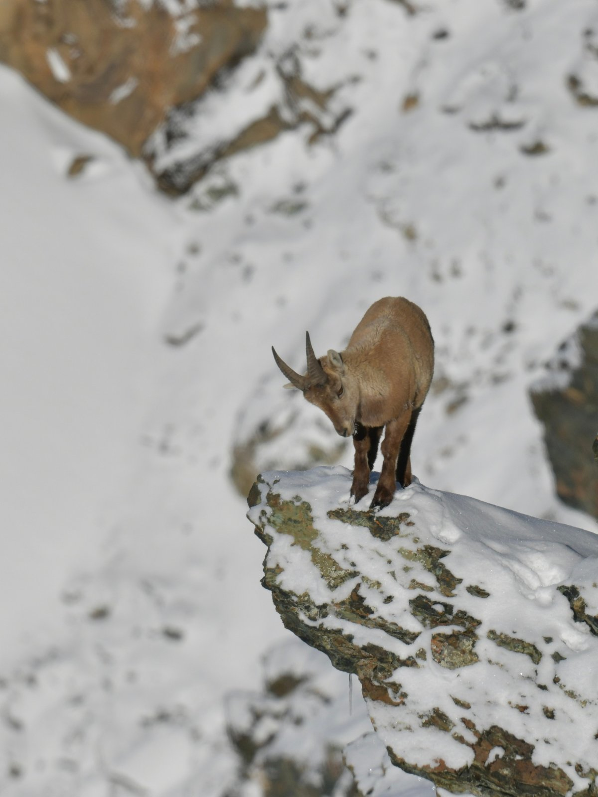
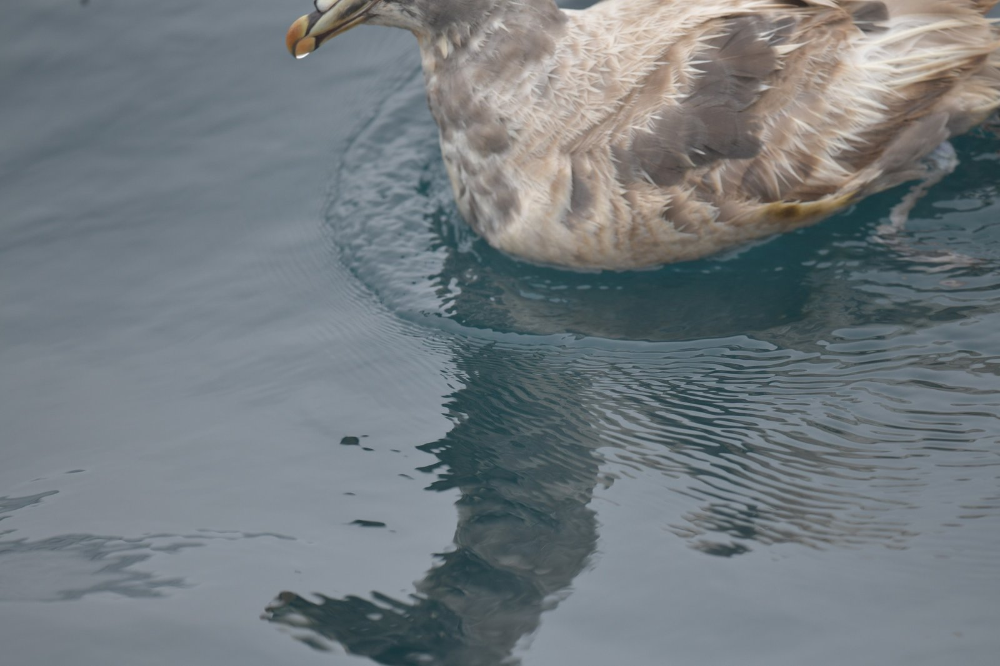
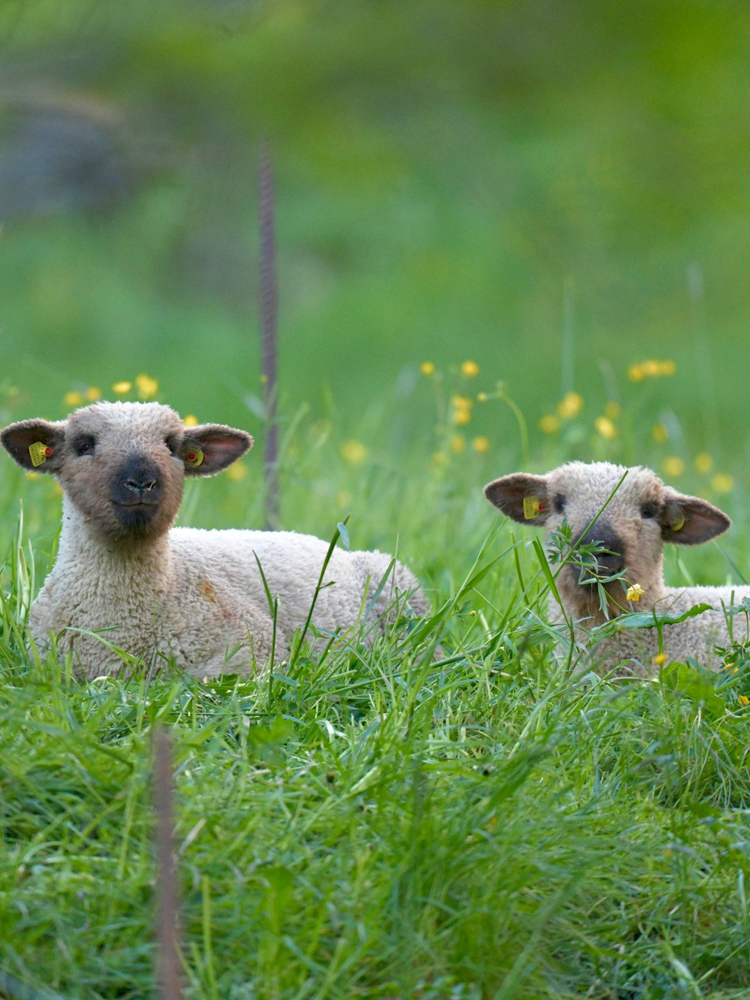

WILDLIFE / THROUGH MY LENSSeptember 2026
01 / LATEST ENCOUNTERS
American Robin
Turdus migratorius
A closer look at the wildlife I meet along the way.
Explore speciesTHE RECENT SELECTION
From the field.
- Species
- 08
- Photographs
- 12
- Months covered
- June 2026 — September 2026





